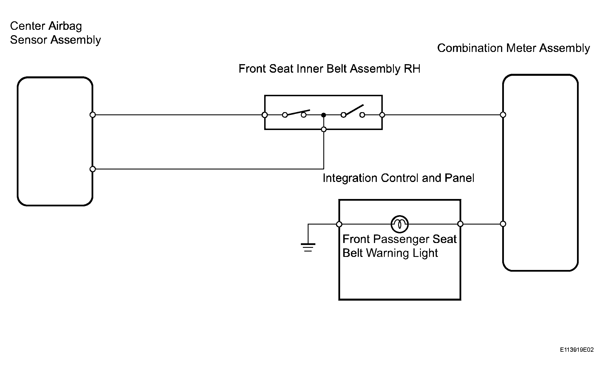

Front Passenger Side Seat Belt Warning Light Malfunction: Wiring Diagram
Fig 1: Front Passenger Side Seat Belt Warning Light Malfunction - Wiring Diagram

Courtesy of © TOYOTA, LICENSE AGREEMENT TMS1002